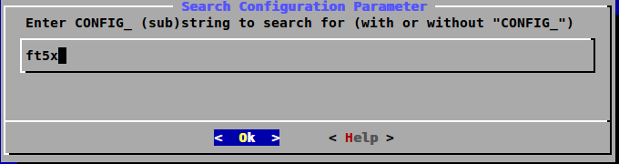
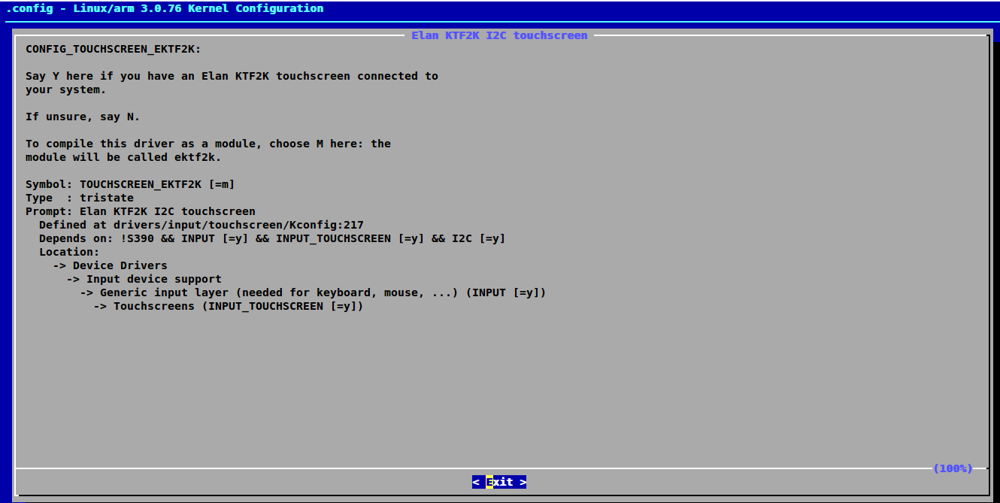
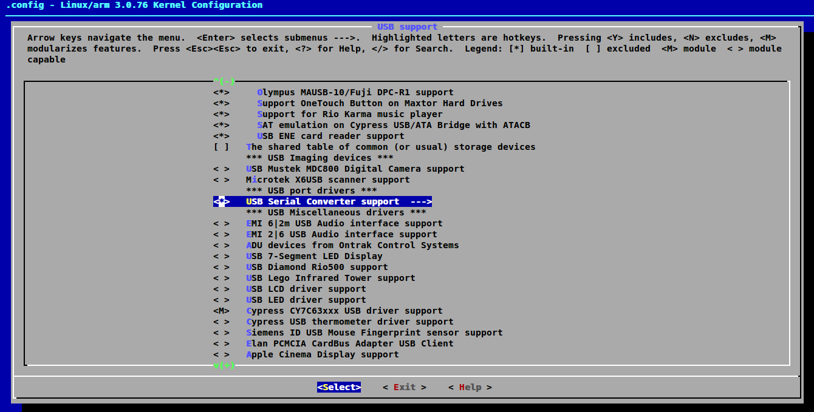
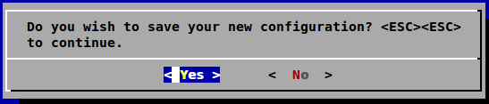
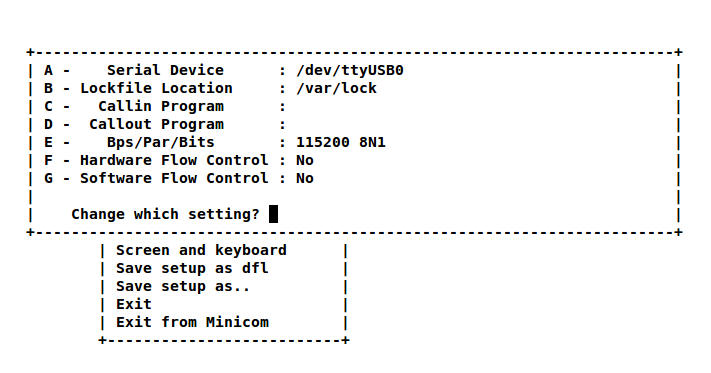
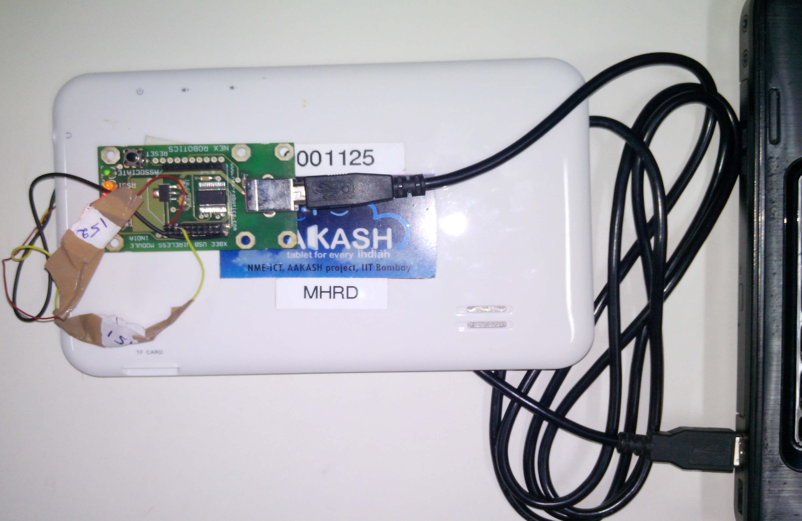
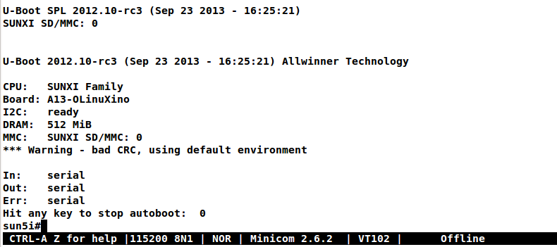

Embedded Linux is the use of Linux in embedded computer systems such as mobile phones, personal digital assistants (PDA), media players, set-top boxes, and other consumer electronics devices, networking equipment, machine control, industrial automation, navigation equipment and medical instruments. (Wiki)
Practically EL devices are no different from any regular desktop Linux, except the fact that most of the input/output, sound/video/graphics components are embedded in one IC(integrated circuit), also known as System on Chip(SoC).
The production cost per SoC has now become as low as 10$, which enables low cost embedded Linux devices. Android is also an embedded Linux device.
ARM (Advanced RISC Machines) is the most actively developed, low cost, low power embedded processor available in both 32bit & 64bit versions. ARM based SoCs are manufactured by Samsung, Texas Instruments, ATMEL, NVIDIA, Apple, Qualcomm and more.
Beyond ARM, the other notable embedded processors are SUN-SPARC, MIPS, PowerPC, Zilog, AVR, and more.
We will install toolchain and perform development for ARM processors only. Similar approach can be adopted for any other architectures too.
Layman comparision of ARM & x86 (2013 approximate price)
| Entity | x86(i3) | ARM(Cortex-A8) |
|---|---|---|
| Processor/SoC | 107$ | 11$ |
| RAM(1GB/DDR3) | 15$ | 5$ |
| ROM(SSD/NAND) | 60$(60G) | 4$(4G) |
| Graphics | 20$ | NA |
| Power usage | high | low |
| Size(Board) | 10”x10” | 4”x2” |
Today, it is cheaper to deploy a quad core ARM based web-server than its x86 counterpart. With better speed, small size & low power consumption, ARM boards are turning out to be real threat for desktop processors.
ARM architecture based Open hardware Embedded Linux boards
| Board name | Company / ARM type / Core(s) | Approximate Price |
|---|---|---|
| Raspberry-Pi | Broadcom BCM2835, ARM11, 1 | 25$ |
| BeagleBone(B) | TI OMAP 3, Cortex-A8, 1 | 45$ |
| PandaBoard | TI OMAP 4, Cortex-A9, 2 | 182$ |
| WandBoard | Freescale, Cortex-A9, 1,2,4 | 79$ (1 core) |
| Cubieboard2 | Allwinner A-20, Cortex-A7, 2 | 59$ |
| A13-OLINUXINO | Allwinner A-13(Aakash), Cortex-A8, 1 | 47$ |
Companies using ARM architecture
| Company | SoC Name | Notable products | ARM type / Core(s) |
|---|---|---|---|
| Apple | A4 | iPhone4, iPad(1G), AppleTV(2G) | Cortex-A8, 1 |
| Apple | A5 | iPhone4S, iPad2, AppleTV(3G) | Cortex-A9, 2 |
| Apple | A7 | iPhone5s | Cortex-A7, 64bit |
| Samsung | Exynos 3 Single | Samsung Galaxy S, Galaxy Nexus S | Cortex-A8, 1 |
| Samsung | Exynos 4 Dual | Samsung Galaxy SII, Samsung Galaxy Note | Cortex-A9, 2 |
| Samsung | Exynos 4 Quad | Samsung Galaxy SIII | Cortex-A9. 4 |
| Nvidia | Tegra | Microsoft Zune HD | ARM11, 1 |
| Nvidia | Tegra 2 | ASUS Transformer, GalaxyTab 10.1 | Cortex-A9, 2 |
| Nvidia | Tegra 3 | ASUS Nexus 7, HTC One X | Cortex-A9, 4 |
| Qualcomm | Snapdragon S2 | Nokia Lumia 900 | NA, 1 |
| Qualcomm | Snapdragon S3 | HP TouchPad | NA, 2 |
| Qualcomm | Snapdragon S4 | HTC EVO 4G LTE | NA, 2 |
| TI | Omap 3 | Barnes and Noble Nook Color | Cortex-A8, 1 |
| TI | Omap 4 | KindleFire,GalaxyTab 2,Blackberry Playbook | Cortex-A9, 2 |
| TI | Omap 5 | NA | Cortex-A15, 2 |
The steps involved in Linux boot process (x86 and ARM) :
BIOS (assembly & C) - is the first program run by x86 based motherboard. ARM boards do not have BIOS, but each SoC has its own program to verify the on-board peripherals after power on.
This BIOS equivalent program in EL is mostly hardcoded in SoCs, hence updating them is usually not possible in case of embedded devices.
The purpose of this stage is to check the integrety of peripherals connected, if found OK, it will look for bootloader application in first boot-able device.
Bootloader (C & assembly) - is used to copy and uncompress kernel to RAM from a given location. GRUB(GRand Unified Bootloader) is the popular bootloader for desktop Linux machines.
Embedded Linux uses U-Boot bootloader.
Kernel (C & assembly) - again probes all connected hardware and initializes them systematically. At the end of the kernel stage, it calls init process from filesystem to initialize user space scripts and startup jobs.
Initrd (initial ramdisk) - is an optional scheme for loading a temporary root file system containing device drivers into memory in the boot process of the Linux kernel.
File-system - is the last stage of boot process, it contains glibc and other architecture specific shared libraries to run user space applications.
Filesystem optionally may contains X-server which provides graphical desktop environment such as GNOME, KDE etc.
In Ubuntu 12.04+, issue the below command to install cross compiler
sudo apt-get install gcc-arm-linux-gnueabihf
Install dependencies for kernel and u-boot compilation
sudo apt-get install build-essential dpkg-dev kernel-wedge make automake\
checkinstall git u-boot-tools
Install qemu-user-static for setting up chroot based ARM virtualization to install packages in ARM-fileystem
sudo apt-get install qemu-user-static
If you have serial console (Rx, Tx) lines from the board/tablet, then to view console output install minicom (optional)
sudo apt-get install minicom
At the end of this stage you will have a bootable sdcard with your custom embedded Linux.
For those who want to try Linux on Aakash now, can download this sdcard image
Insert the sdcard and umount
umount /dev/sdX
Untar the file and dd it to sdcard
sudo dd if=13.10_2GB_24_09_2013.img of=/dev/sdX bs=1M count=2048
Clone the repository by
git clone -b sunxi https://github.com/androportal/uboot-allwinner.git \
--depth=1
cd into uboot-allwinner
cd uboot-allwinner
To compile uboot issue
make a13_olinuxino CROSS_COMPILE=arm-linux-gnueabihf-
After successful compilation u-boot.bin will be available at root of the directory and sunxi-spl.bin will be in spl directory
SDCARD layout
| Start | size | usage |
|---|---|---|
| 0 | 8KB | Unused |
| 8 | 24KB | Initial SPL loader |
| 32 | 512KB | u-boot |
| 544 | 128KB | environment |
| 672 | 352KB | reserved |
| 1024 | – | free for partitions |
Insert sdcard in card reader or MMC reader available in laptops/netbooks
Backup all your sdcard data, and issue the following commands carefully, replace X in /dev/sdX with suitable letter(a lower case alphabet) alloted for your sdcard, remember X will never be a if you have a hard disk installed, so keep in mind it must be something like /dev/sdb or /dev/sdc etc. Please check twice and if you are still unsure then do not perform these steps
sudo fdisk -u=sectors /dev/sdX
First clear the previous u-boot and its configurations, if any:
sudo dd if=/dev/zero of=/dev/sdX bs=1024 seek=544 count=128
Now from same uboot-allwinner directory issue these commands, again replace X with suitable value, now to write sunxi-spl.bin to sdcard issue:
sudo dd if=spl/sunxi-spl.bin of=/dev/sdX bs=1024 seek=8
Similarly to burn u-boot.bin issue
sudo dd if=u-boot.bin of=/dev/sdX bs=1024 seek=32
At this point we have a bootable sdcard readly. Get kernel and rootfs to make a usuable Linux for your tablet.
Kernel compilation steps are same for
Clone the repository by
git clone https://github.com/androportal/linux-sunxi.git
cd into linux-sunxi
cd linux-sunxi
Checkout to desired branch, it this case sunxi-3.0:
git checkout sunxi-3.0
You may use the existing .config file to compile the kernel for Aakash, or customize it using standard procedures.
.config contains all settings and modules information set by user for specific hardware. This will differ from board to board. A .config file is autogenerated and can be customized later by following commands. The next command will create a default .config for A13(Aakash) board, do not run the next command if you have already downloaded the .config file from above link, otherwise it will overwrite without any warning
make ARCH=arm a13_defconfig
To customize or view the settings you may run the following command(optional)
make ARCH=arm menuconfig
To search any module or setting use '/'
To get module help use '?' when selected
Use space-bar to toggle 'M' (as module) or '*' (build in kernel)
Use arrow keys to select exit, and choose yes to save the new .config file
Now to compile kernel issue
make ARCH=arm CROSS_COMPILE=arm-linux-gnueabihf- uImage
To make kernel modules
make ARCH=arm CROSS_COMPILE=arm-linux-gnueabihf- \
INSTALL_MOD_PATH=out modules
To install modules in right path
make ARCH=arm CROSS_COMPILE=arm-linux-gnueabihf- INSTALL_MOD_PATH=out \
modules_install
After successful compilation uImage will be available at arch/arm/boot/uImage and also find script.bin in the root of the directory(This section is subject to change), the kernel modules are available at out/lib/modules/3.0.76+/
Insert sdcard in card reader or MMC reader available in laptops/netbooks
Backup all your sdcard data, and issue the following commands carefully, replace X in /dev/sdX with suitable letter(a lower case alphabet) alloted for your sdcard, remember X will never be a if you have a hard disk installed, so keep in mind it must be something like /dev/sdb or /dev/sdc etc. Please check twice and if you are still unsure leave this README right now otherwise you may end up with non bootable machine:
sudo fdisk -u=sectors /dev/sdX
Then create partition for kernel and filesystem in your sdcard, from inside fdisk prompt type p to list all partitions
Command (m for help): p
Now press d to delete your partition. If you have multiple partitions use partition number to delete each partition as shown by fdisk utility:
Command (m for help): d
Type n for new partion(hit enter) and then mention p for primary partition, hit enter to continue with default starting sector(2048), enter again for last sector and mention +16M, this partition will be later formatted with vfat for kernel:
Command (m for help): n
Partition type:
p primary (0 primary, 0 extended, 4 free)
e extended
Select (default p): p
Partition number (1-4, default 1):
Using default value 1
First sector (2048-7744511, default 2048):
Using default value 2048
Last sector, +sectors or +size{K,M,G} (2048-7744511, default 7744511): +16M
The sdcard is assumed to be 4gb size, similarly create 2nd primary partition using remaining disk space which will serve as filesystem:
Command (m for help): n
Partition type:
p primary (1 primary, 0 extended, 3 free)
e extended
Select (default p): p
Partition number (1-4, default 2):
Using default value 2
First sector (34816-7744511, default 34816):
Using default value 34816
Last sector, +sectors or +size{K,M,G} (34816-7744511, default 7744511):
Using default value 7744511
(Optional) If you intend to use swap partion, leave atleast ~300MB in previous step and create a 3rd primary partition.
Now as we have created 2 primary partitions now let’s write(w) the changes to disk. For that issue:
Command (m for help): w
As partition is completed, we need to format them respectively, the first partition must be vfat so that uboot can read kernel:
sudo mkfs.vfat /dev/sdX1
For rootfs, create ext4 partition:
sudo mkfs.ext4 /dev/sdX2
Now mount vfat partition to some mount point(directory):
sudo mount -t vfat /dev/sdX1 /mnt/boot
copy kernel to /mnt/boot, assuming that you are still in linux-sunxi directory:
sudo cp arch/arm/boot/uImage /mnt/boot
Also copy script.bin to same directory(script.bin must be extracted from android partition)
sudo cp script.bin /mnt/boot
Now, umount /mnt/boot, before that you may want to sync so that any remaining buffers are written to disks:
sudo sync
Finally unmount:
sudo umount /mnt/boot
At this point we have a sdcard ready with kernel. Copy rootfs to make a usuable Linux for your hardware.
As of now we have uboot and kernel ready, the next step is to run applications, to do so we need Linux file system. One can use any distribuition from here after. For this session we will use ubuntu 13.10 daily build. You can upgrade to stable 13.10 later.
We will use LXDE, as it is almost 50% lighter & twice as faster than any other desktop environment.
Insert sdcard again, download the core ubuntu 13.10 image from this link and save it in say /tmp directory. Extract the tar file in your sdcard’s ext4 partition
cd /media/<ext4 partition of sdcard>
Now extract core ubuntu file system
sudo tar -xvpzhf /tmp/saucy-core-armhf.tar.gz
Copy the static qemu binary to mount arm fs in x86 architecture without invoking actual qemu emulator
sudo cp /usr/bin/qemu-arm-static /media/<ext4 partion of sdcard>/usr/bin/
Now set up chroot environment manually or use the ch-mount.sh bash script given two steps below
sudo mount -t proc /proc /media/<ext4 partion of sdcard>/proc
sudo mount -t sysfs /sys /media/<ext4 partion of sdcard>/sys
sudo mount -o bind /dev /media/<ext4 partion of sdcard>/dev
sudo mount -o bind /dev/pts /media/<ext4 partion of sdcard>/dev/pts
chroot into the file system
sudo chroot /media/<ext4 partition of sdcard>/
The above two steps can be combined together using a simple bash ch-mount.sh. From here onwards we will use this script to mount and un-mount fs. Please read this script to get any further help
sudo bash ch-mount.sh -m /media/<ext4 partition of sdcard>/
Now we have a chroot environment with all proc, dev, sys, dev/pts mounted, so run update to fetch repository informations (as chroot has root prompt so no need to write sudo anymore)
apt-get update
Open /media/<ext4 partition of sdcard>/etc/apt/sources.list in texteditor and replace the content with following
deb http://ports.ubuntu.com/ubuntu-ports/ saucy main universe
deb http://ports.ubuntu.com/ubuntu-ports/ saucy multiverse restricted
deb-src http://ports.ubuntu.com/ubuntu-ports/ saucy main universe
deb-src http://ports.ubuntu.com/ubuntu-ports/ saucy multiverse restricted
Now install english language pack to avoid locale related errors
apt-get install language-pack-en-base
Now install minimal X environment to test our setup
apt-get install vim.tiny sudo ssh net-tools ethtool wireless-tools lxde \
xfce4-power-manager xinit xorg network-manager iputils-ping \
florence rsyslog alsa-utils gnome-mplayer \
Few optional recommended packages for system utilities(lxtask, lxproxy and htop)
apt-get install bash-completion lxtask htop \
python-central python-gobject-2 python-gtk2 synaptic\
Download lxproxy and install using dpkg:
dpkg -i lxproxy_0.1ubuntu3_all.deb
Few more optional packages for office suite, arduino development and pcb designing (testing purpuse):
apt-get install libreoffice python-gnome2 python-gconf python-serial\
python-gtksourceview2 gcc-avr binutils-avr avr-libc avrdude python-xdg
Download gnoduiono and install using dpkg:
dpkg -i gnoduino_0.4.0-0pmjdebruijn4~precise_all.deb
Add user and set permissions
adduser aakash && addgroup aakash adm && addgroup aakash sudo && \
addgroup aakash audio
Open /etc/hostname file in vim.tiny editor and give a hostname, for example write aakash-arm
Similarly open /etc/hosts and remove its content and add these two lines:
127.0.0.1 localhost
127.0.1.1 aakash-arm
Open /etc/modules file and append these two lines
gt811_ts
ft5x_ts
ektf2k
8192cu
Add these lines in /etc/rc.local to activate swap at boot time(if using):
# Added for Aakash, assuming the last partition will be swap
mkswap /dev/mmcblk0p3
swapon /dev/mmcblk0p3
To allow non root user to edit networking, change this file
/usr/share/polkit-1/actions/org.freedesktop.NetworkManager.policy
look for this section:
<action id="org.freedesktop.NetworkManager.settings.modify.system">
change <allow_active> to 'yes':
<defaults>
<allow_inactive>no</allow_inactive>
<allow_active>yes</allow_active>
</defaults>
</action>
Open /etc/lxdm/lxdm.conf and modify it for autologin. Change the autologin section in the top of the file to this
## uncomment and set autologin username to enable autologin
autologin=aakash
Now open a new tab in your host Linux machine’s terminal and copy /<path to linux kernel>/linux-sunxi/out/lib/modules/3.0.76+/ to your arm ubuntu setup
sudo cp -r /<path to linux kernel>/linux-sunxi/out/lib/modules/3.0.76+/ \
/media/<ext4 partition of sdcard>/lib/modules/
Download rtl8192cufw.bin from this page, and create a directory as /lib/firmware/rtlwifi in ubuntu chroot, copy rtl8192cufw.bin inside rtlwifi directory
By now we have basic elements set to give a trial run to our OS. Type exit in chroot environment to get back to Ubuntu x86 host prompt, now run un-mount script
sudo bash ch-mount.sh -u /media/<ext4 partition of sdcard>/
unmount both the partitions (fat32 and ext4) from your machine, confirm with mount command to check nothing from sdcard is mounted
Remove the sdcard and insert it in your tablet, power on to get ubuntu 13.10 lxde desktop.
The default login is aakash. If you unable to logout or shutdown, then you must set the following as root
chmod u+s /usr/bin/lxsession-logout
Minicom is a serial communication program, its used to access serial console at certain baudrate us Rx & Tx lines. The serial console redirects the output of embedded Linux device to minicom. Mostly embedded devices do not have display units, hence serial debugging is one of the widely used practice.
Set the proper baud rate and port. The baud rate could be 115200 in most cases, if not check the manual of the SoC.
Run
sudo minicom -s
and then navigate to Serial port setup and change settings to match as shown below, hit enter to exit, then Save setup as dfl.
Connect Rx, Tx lines to your embedded board and other end to your host laptop/desktop.
Now run
minicom
and you should see scrolling U-boot and kernel logs. By default U-boot waits for user interrupt for 3 seconds. If interrupted it will drop into U-boot prompt, similar to this
You can type help to see all U-boot commands.
To print default U-boot environment variables
printenv
U-boot prompt can allow user to update kernel, load alternate kernel images, change the environment variables and lot more.
Now to boot the kernel from U-boot prompt just run
boot
This will boot the default kernel set in U-boot environment.
The kernel logs can be viewed in same minicom serial console. The logs provide important information about services and drivers. One can set loglevel to control the extent of debug info on screen.
Developers usually insert printk statements in device drivers and check values of variables in kernel log. The better and efficient way to debug kernel is by using kdb. More on kdb can be found here